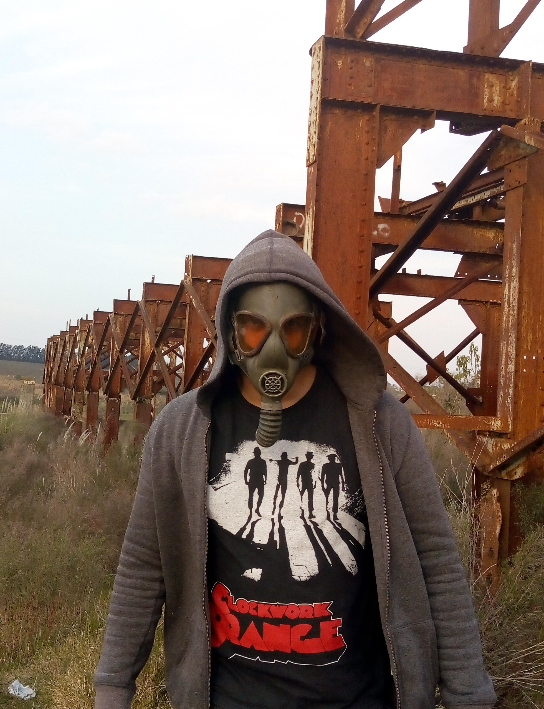

RICKY MORPHIN
Musician - Dj - Electronic Music Producer
About Ricky Morphin

His first two releases in 2006, “Monster” and “Yellow Kitchen” were released on the Berlin label Autist Records. A few EPs later, Boris moved from Autist Records to Harthouse. With tracks like “Die Maschinen Sind Gestrandet” and “Lost Memory”, he combined his unique sound with a maximum of varieties. Consequently, he became the “exceptional Talent 2007” in the electronic music magazine Raveline. Boris also created his second alias called “ANNA” in 2007 and had some groundbreaking releases on Autist Records.
After four years of touring, three albums and lots of singles, Boris became a constant favorite in today's club scene. With his ambition and desire for new and experimental musical directions, he shows his audiences over and over again how exciting minimal techno can be - so much more than just a conglomerate of repetitive and puristic elements.
"I found in electronic music a way to dump all the melodies
and harmonies that come to my mind. I became addicted to exploring new sounds and new ways to exploit musical creativity by generating tracks that transport the listener or transmit the energy that characterizes genres such as techno and house, adding a artistic touch that mixes my musical and engineering knowledge."
Ricardo Illa
Top Tracks
| # |
Name |
Date |
| 1 |
Quarentine |
April/2020 |
| 2 |
Ode |
August/2019 |
| 3 |
War |
March/2020 |
>
